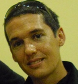

When you’re 40 to 50 years old, my suggestion is you should do things you are good at.
I hope that you see right through my walls, I hope that you catch me, 'cause I'm already falling, I'll never let our love get so close, You put your arms around me and I'm home
So don't walk away love, There's never enough that could make me crash on the broken glass, Let the storm rage, I'd die on the waves, But I will not rest while love lies dead in the water.
I've been reading books of old, the legends and the myths, Achilles and his gold, Hercules and his gifts, Spiderman's control, and Batman with his fists, and clearly I don't see myself upon that list. But she said, where'd you wanna go?, how much you wanna risk?, I'm not looking for somebody with some superhuman gifts, some superhero, some fairytale bliss, just something I can turn to, somebody I can kiss. I want something just like this
People think he's dumb but he knows what he is doing. He never gives up.(in reference to Forrest Gump character)
And the slower that you go, the greener the grass grows, and what we all need is love in our lives.
Porque es mucho más bonito saber que te quieren, que imaginárselo.
Que navegues siempre hacia mar abierto, y si alguna vez te pierdes, sólo mira dentro.

If you never fail you're not trying hard enough
...para darte ese ramo de rosas, que siempre te envio a mediaos de febrero, diciéndote que te quiero.
Y es que yo no quiero pasar por tu vida como las modas, no se asuste señorita, nadie le ha hablado de boda
Ignoranti quem portum petat nullus suus ventus est
Construction is the only activity that's guaranteed to be done. Requirements can be assumed rather than developed; architecture can be shortchanged rather than designed; and testing can be abbreviated or skipped rather than fully planned and executed. But if there's going to be a program, there has to be construction